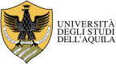

A total of 4 Universities and 1 organisation form the B-READI consortium. All 5 partners demonstrated high enthusiasm on the idea that they could collaborate in this project. There is a wide range of disciplines involved in the consortium. All participating institutions have extensive experience using online platforms and remote communication, collaboration and coordination practices. All participating institutions are capable of using the digital platforms for the delivery of the project’s outputs.
The consortium consists of the following partners:
| University | Country | |
|---|---|---|
|  | Universita Degli Studi Della'Aquila | Italy |
| Emergency and Disaster Management Studies | Italy | |
| Universitat De Girona | Spain | |
| Universidade Dos Acores | Portugal | |
| Middlesex University | United Kingdom | |
| Technische Universitat Berlin | Germany | |